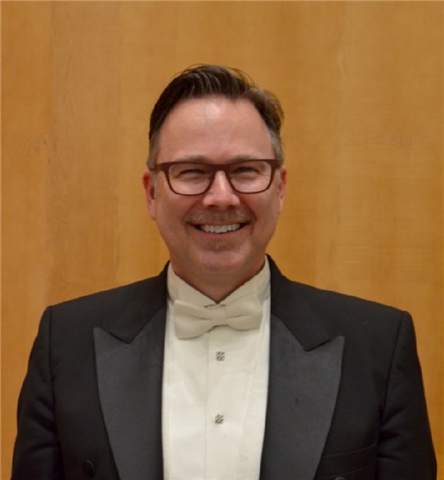

Cantabile is an adjective, meaning songlike,
or in a smooth, flowing, lyrical style.
In December 2005, a small group of singers assembled to perform at
Habitat for Humanity Christmas Concert in La Connor, Washington. Out of
that original group, Cantabile was formed.
Today, Cantabile has grown to become a 20-member ensemble of auditioned
vocalists gathered from the Skagit Valley area. The group performs
Christmas and spring concerts of sacred and secular works. We enjoy
performing classical music that has withstood the test of time, and
experimenting with contemporary selections that challenge us and
entertain our audiences. Our mission is to share our love of
beautiful choral music with audiences throughout the Skagit Valley
area and beyond.
Cantabile’s purpose each season is to enhance the community’s
enjoyment and understanding of choral arts through communicating the
beauty of music. The group has been honored to support Skagit Opera,
Skagit Valley Chorale, Skagit Symphony, and other performing arts
groups, through members’ active participation in their productions
and concerts. We are pleased to be working in collaboration with the
Anacortes Arts Foundation. We look forward to seeing you and your
family at our inspiring concerts.
Click here for audition information
Our Director is Stephen Marshall-Ward

Cantabile Chamber Choir as Music Director in the fall of 2012. Dr.
Marshall-Ward has multiple degrees in music, specializing in choral
conducting, composition, and performance. He completed post-graduate
studies at Westminster Choir College and Southwestern Seminary. In
2013, he received a Doctorate in Sacred Music through Oxford
University’s Summer Program (England) and The Graduate Theological
Foundation, working closely with his mentor, Bishop David Stancliffe,
presenting a detailed analysis of Morten Lauridsen’s Midwinter Songs,
performed December of 2012 by Cantabile.
As an educator, Dr. Marshall-Ward has taught at Seattle Pacific
University and at Trinity Lutheran College, where he served as Chair
of the Music Department. As Music Director and Organist, he has
served churches for more than thirty-five years. He currently serves
as Minister of Music and Organist at Seattle’s All Pilgrims Christian
Church and as Accompanist/Assistant Choral Director at Bellevue’s
Temple B’nai Torah. His love for choral music has grown and
developed over nearly forty years. His greatest joy comes from
bringing singers of all ages together and creating opportunities for
making a difference in people’s lives through great music.
Rehearsals
Rehearsals are held at Bethany Covenant Church on Monday evenings
at 6:30pm (1318 S 18th St, Mt. Vernon, WA, 98274)
Auditions & Contact Info
Cantabile singers come from all walks of life. Choral experience in an advanced ensemble is highly desirable. Formal voice study is not required, but all members are expected to be able to sing musically, on pitch, in accurate rhythm, and to have moderate to advanced sight reading ability. Singers are expected to have a good reading knowledge of musical notation, and some familiarity singing in foreign languages is a bonus.
Singers from all sections are welcome to audition. During an audition, a singer will be judged by their intonation, musical ear, vocal excellence, and aptitude for learning. Rehearsals are Monday evenings from 6:30 to 9:00 p.m at Bethany Covenant Church in Mt. Vernon. Interested singers are very welcome to attend a rehearsal, to determine whether they wish to schedule an audition.
Please contact Jennie Bouma with questions or to make an appointment: 425-312-4565